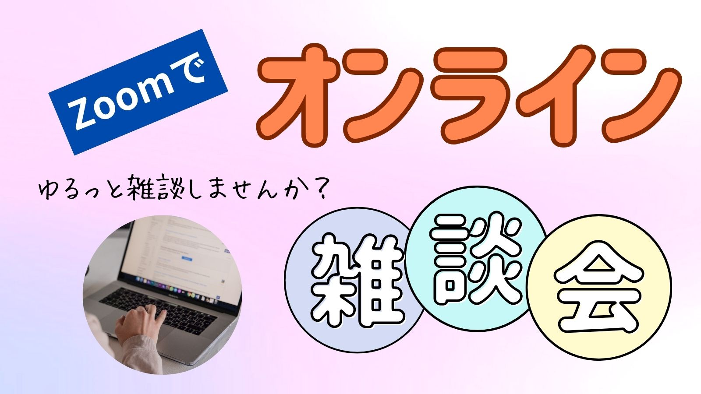

Code for Ichinomiya
はじめに
皆さんはシビックテック（CivicTech）をご存知ですか？
シビックテックとは、市民（Civic）が自らデジタル技術（Tech）を用いて、地域課題を解決していく取り組みのことです。
Code for Ichinomiyaは、愛知県一宮市にて、シビックテックの活動を行なっています。
メンバー

代表：齋藤 仁志
シビックテッカー
アプリ開発

副代表：齋藤 千裕
書道家セラピスト
書道準師範
活動履歴

2026年2月23日〜
魚編の漢字を集めよう！プロジェクト
683種類もある魚編の漢字を集めよう！という取り組みです！


2024年12月13日
オンライン雑談会
Code for Ichinomiyaの今後の取り組み、デジタル地球儀の改良案などの話し合いを行いました。
Instagram
でも情報発信しています。